Simscape 기초 — 부품을 이어 물리 모델을 만든다
- Simulink 블록 선도를 그리려면 먼저 미분방정식을 세워야 한다. 식을 세우지 않고 부품을 그대로 이을 수는 없을까?
- Simscape의 선은 Simulink의 선과 무엇이 다른가? 왜 화살표가 없나?
- Simscape 모델에 꼭 있어야 하는 블록 세 가지는 무엇이고, 각각 왜 필요한가?
- 부품을 이어 만든 모델의 응답은 손으로 구한 전달함수의 응답과 같은가? 기계가 아니라 전기 회로라도 그런가?
- 센서가 내놓는 값의 단위는 어디서 정하나? rpm으로 바로 받을 수 있나?
9회에서는 블록 선도를 그렸다. 플랜트 자리에는 Transfer Fcn 블록을 놓고 분모 계수 [1 18 95 150]을 적었다.
그 계수는 어디서 왔을까? 누군가 시스템의 미분방정식을 세우고 라플라스 변환을 해서 얻은 것이다. 제어공학 4장에서 하던 그 일이다.
오늘은 그 단계를 건너뛰는 도구를 본다. Simscape는 질량 · 스프링 · 저항 · 모터 같은 부품 블록을 실제 연결 그대로 이으면 운동방정식을 스스로 세우고 푼다. 첫 예제로 4장의 기계 소자 셋(질량 · 댐퍼 · 스프링)을 이어 보고, 손으로 구한 전달함수와 같은 답이 나오는지 확인한다. 이어서 회전 운동과 간단한 RC 회로를 같은 방법으로 만들어 본다. 다음 11회에서는 이 둘을 합쳐 DC 모터를 만든다.
① Simscape는 무엇인가
부품을 잇기만 하면 된다면 왜 처음부터 그렇게 하지 않았을까? 식을 세우는 법을 먼저 알아야 결과가 맞는지 판단할 수 있기 때문이다. 오늘도 식을 먼저 세우고(②), 같은 시스템을 부품으로 만든 뒤(③~⑤), 둘이 같은 답을 내는지 맞춰 본다(⑥).
Simscape 모델과 Simulink 모델은 같은 편집기 안에 섞여 있지만 선의 뜻이 다르다.
| Simulink 신호선 | Simscape 물리 연결선 | |
|---|---|---|
| 모양 | 화살표가 있다 (검은 선) | 화살표가 없다 (분야마다 색이 다르다 — 기계 초록, 전기 파랑) |
| 뜻 | 값 하나가 한쪽에서 다른 쪽으로 전해진다 | 두 단자가 붙어 있다 — 같은 위치·같은 전압을 갖는다 |
| 예 | \(e = r - y\)를 Gain으로 보낸다 | 스프링 끝과 질량이 붙어 있다 |
| 나눠질 때 | 같은 값이 여러 곳에 복사된다 | 힘(전류)이 여러 갈래로 나뉘고, 갈래의 합은 0이다 |
마지막 줄이 핵심이다. 질량에 스프링 · 댐퍼 · 외력이 함께 붙어 있으면, Simscape는 그 접점에서 힘의 합이 0(뉴턴 법칙, 회로라면 키르히호프 전류 법칙)이 되도록 식을 세운다. 교재에서 자유물체도를 그리고 힘을 더하던 일을 접점마다 자동으로 하는 셈이다.
② 질량-스프링-댐퍼의 전달함수
오늘의 시스템은 벽에 스프링과 댐퍼로 매달린 질량이다. 질량을 오른쪽으로 일정한 힘 \(F\)로 민다. 질량은 어디까지 가고, 어떻게 흔들리다 멈출까?
질량에 걸리는 힘을 모두 더한다. 외력은 오른쪽, 스프링은 늘어난 만큼 왼쪽, 댐퍼는 속도만큼 왼쪽으로 당긴다.
$$M\ddot{x} = F - kx - b\dot{x}$$ $$M\ddot{x} + b\dot{x} + kx = F$$초기값을 0으로 두고 라플라스 변환하면
$$\frac{X(s)}{F(s)} = \frac{1}{Ms^2 + bs + k} = \frac{1}{s^2 + 2s + 10}$$% 질량-스프링-댐퍼의 전달함수 X(s)/F(s) = 1/(M s^2 + b s + k)
M = 1; b = 2; k = 10; % 질량 [kg], 댐핑 [N*s/m], 스프링 [N/m]
F0 = 1; % 가하는 힘 [N]
s = tf('s');
G = 1/(M*s^2 + b*s + k)
damp(G)
x_final = F0*dcgain(G)명령 창 출력
G =
1
--------------
s^2 + 2 s + 10
Continuous-time transfer function.
Model Properties
Pole Damping Frequency Time Constant
(rad/seconds) (seconds)
-1.00e+00 + 3.00e+00i 3.16e-01 3.16e+00 1.00e+00
-1.00e+00 - 3.00e+00i 3.16e-01 3.16e+00 1.00e+00
x_final =
0.1000출력을 읽는다. 극점은 \(-1 \pm j3\), 제동비 0.316, 고유주파수 3.16 rad/s — 제동비가 작으니 꽤 출렁인다. 최종 위치는 0.1 m다. 스프링이 \(kx = 10 \times 0.1 = 1\) N으로 미는 힘과 같아지는 자리에서 멈춘다.
📐 이론과 잇기 — 4장의 2차 시스템 공식에 대입
\(s^2 + 2\zeta\omega_n s + \omega_n^2\)과 맞추면 \(\omega_n = \sqrt{k/M} = \sqrt{10} = 3.162\), \(\zeta = \dfrac{b}{2\sqrt{kM}} = \dfrac{2}{2\sqrt{10}} = 0.316\).
최대초과 \(e^{-\zeta\pi/\sqrt{1-\zeta^2}} = e^{-0.316\pi/0.949} = e^{-1.047} = 0.351\) — 최대 위치는 \(0.1 \times 1.351 = 0.135\) m가 되어야 한다. ⑥에서 확인한다.
②절까지의 전체 코드
% 질량-스프링-댐퍼의 전달함수 X(s)/F(s) = 1/(M s^2 + b s + k)
M = 1; b = 2; k = 10; % 질량 [kg], 댐핑 [N*s/m], 스프링 [N/m]
F0 = 1; % 가하는 힘 [N]
s = tf('s');
G = 1/(M*s^2 + b*s + k)
damp(G)
x_final = F0*dcgain(G)③ Simscape 모델 시작 — ssc_new
Simscape 모델은 빈 Simulink 모델에서 시작해도 되지만, 꼭 필요한 블록 몇 개를 매번 찾아 넣어야 한다.
명령 창에 ssc_new를 치면(또는 시작 화면의 Simscape › Blank Model) 그 블록들이 미리 놓인 모델이 열린다.

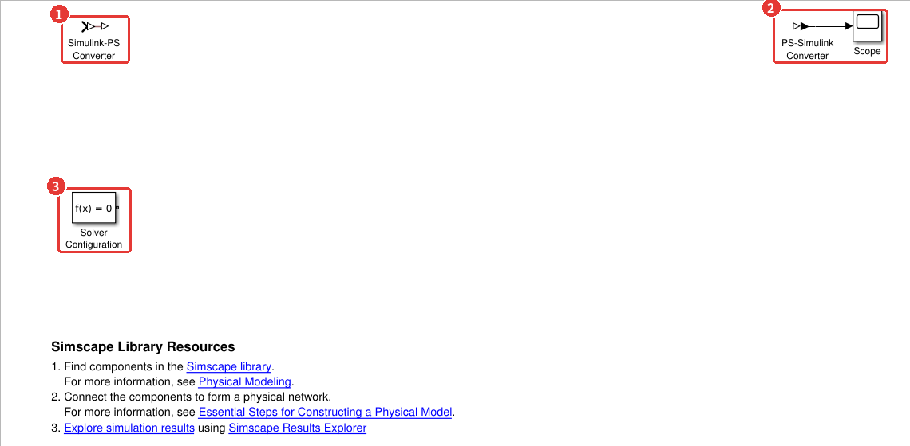
ssc_new로 연 모델. 이 블록들이 모든 Simscape 모델의 뼈대다.- 1Simulink-PS Converter — Simulink 신호(단위 없는 숫자)를 물리 신호(단위가 붙은 값)로 바꾼다. Simulink 쪽 입력이 물리 모델로 들어가는 입구다.
- 2PS-Simulink Converter → Scope — 물리 신호를 정한 단위의 숫자로 바꿔 Simulink로 내보낸다. 출구다.
- 3Solver Configuration(\(f(x)=0\)) — 물리 네트워크 하나에 하나씩 반드시 붙인다. 없으면 실행할 때 오류가 난다.
🆕 이 절에서 처음 나오는 것
- ssc_new
- Simscape용 새 모델을 연다. 변환기 두 개 · Scope · Solver Configuration이 놓여 있다. 여기서는 질량-스프링-댐퍼 모델의 출발점으로 썼다.
- 물리 신호 (Physical Signal)
- 단위를 함께 가진 신호. 변환기와 센서 · 소스의 신호 포트를 잇는 갈색 선이 물리 신호다. Simulink 신호(검은 선)와 바로 이을 수 없고 반드시 변환기를 거친다.
- Solver Configuration
- 물리 네트워크를 계산에 넣어 주는 블록이다. Simulink 블록 선도는 입력에서 출력으로 값을 차례로 넘기며 계산한다. 그런데 ①에서 본 것처럼 부품을 이으면 순서가 없는 식들이 한꺼번에 생긴다 — 질량의 운동방정식 \(M\ddot x = \sum F\)와 함께, 접점마다 「힘의 합은 0」, 「붙어 있는 단자는 위치가 같다」 같은 식이 따라 나온다. Solver Configuration은 이 식들을 한 벌의 연립방정식으로 묶어 Simulink 솔버가 시간마다 풀 수 있게 넘긴다. 아이콘의 \(f(x)=0\)은 「모든 식을 우변이 0인 꼴로 모아 한꺼번에 푼다」는 뜻이다. 이 블록이 없으면 식을 넘길 곳이 없으므로 실행할 때 오류가 난다.
- 네트워크 하나에 하나인 것도 같은 이유다. 선으로 이어진 덩어리 하나가 연립방정식 한 벌이라, 덩어리가 둘로 떨어져 있으면 블록도 둘이 필요하다. 덩어리 안이라면 어디에 붙여도 결과는 같다. 블록을 열면 초기값을 맞추는 허용 오차 같은 설정이 나오는데, 이 과목에서는 기본값 그대로 두면 된다.
3-1 Simscape 라이브러리
부품 블록은 Library Browser의 Simscape › Foundation Library 아래에 분야별로 있다.
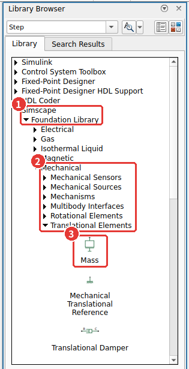
오늘 쓰는 블록과 위치다. 9회처럼 캔버스를 더블클릭해 이름으로 넣어도 된다.
| 블록 | Foundation Library 위치 | 4장의 소자 · 역할 |
|---|---|---|
| Mass | Mechanical › Translational Elements | 질량 \(M\) — 미분 요소 |
| Translational Spring | Mechanical › Translational Elements | 스프링 \(k\) — 적분 요소 |
| Translational Damper | Mechanical › Translational Elements | 댐퍼 \(b\) — 비례 요소 |
| Mechanical Translational Reference | Mechanical › Translational Elements | 움직이지 않는 벽 · 바닥 |
| Ideal Force Source | Mechanical › Mechanical Sources | 입력 힘 \(F\) |
| Ideal Translational Motion Sensor | Mechanical › Mechanical Sensors | 위치 \(x\) · 속도 \(\dot x\) 측정 |
| Solver Configuration · 두 변환기 | Simscape › Utilities | ③의 뼈대 |
④ 물리 연결 — 블록 잇기와 R · C 포트
부품은 어떻게 이을까? 그림의 연결을 그대로 옮긴다. 스프링 · 댐퍼 · 외력은 한쪽 끝이 질량에, 다른 쪽 끝이 벽에 붙어 있다. Simscape 블록의 단자도 같은 식이다. 기계 블록은 대부분 R과 C 두 단자를 가지고, 센서는 「R에 대한 C의 움직임」을 잰다. 그래서 이 자료에서는 늘 R을 기준(벽) 쪽, C를 움직이는 쪽에 단다.
아래 두 그림은 같은 시스템이다. 위는 ②의 시스템에 블록 번호를 붙인 것이고, 아래는 그것을 Simscape로 옮긴 모델이다. 같은 번호가 같은 부품이다.

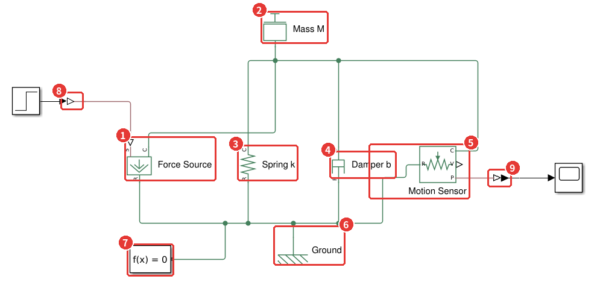
msd_simscape.slx. 위쪽 초록 선이 질량에 붙은 점, 아래쪽 초록 선이 벽이다.- 1Force Source — S 단자로 들어온 값만큼 C와 R 사이에 힘을 낸다. C를 질량에, R을 벽에.
- 2Mass M — 단자가 하나뿐이다. 질량은 늘 「가만히 있는 공간」에 대한 가속도로 힘을 받기 때문에 기준 단자가 따로 없다.
- 3Spring k — C를 질량에, R을 벽에. 두 단자의 위치 차이만큼 힘을 낸다.
- 4Damper b — 스프링과 나란히. 두 단자의 속도 차이만큼 힘을 낸다.
- 5Motion Sensor — C(재는 점)를 질량에, R(기준)을 벽에. 오른쪽 P 단자가 위치, V 단자가 속도다.
- 6Ground(Mechanical Translational Reference) — 벽. 아래 초록 선 전체가 이 블록에 붙어 「움직이지 않는 점」이 된다.
- 7Solver Configuration — 초록 네트워크 아무 곳에나 하나 붙인다.
- 8Simulink-PS Converter — Step(1 N)을 물리 신호로 바꿔 Force Source의 S로 보낸다.
- 9PS-Simulink Converter — 센서의 위치를 숫자로 바꿔 Scope로 보낸다.
블록을 놓으면 Library Browser의 긴 이름이 그대로 붙는다 — 센서는 Ideal Translational Motion Sensor, 스프링은 Translational Spring이다.
블록 아래의 이름을 더블클릭하면 고칠 수 있다. 그림처럼 Mass M · Spring k · Damper b · Force Source · Motion Sensor · Ground로 바꿔 둔다.
이름은 보기 좋으라고만 바꾸는 것이 아니다. ⑥과 6-1의 코드가 out.simlog.Motion_Sensor, out.simlog.Spring_k처럼 블록 이름으로 값을 꺼내기 때문이다.
선 긋는 법은 9회와 같다. 단자에서 단자로 끈다. 다만 화살표가 없으니 어느 쪽에서 시작해도 된다. 위쪽 초록 선에 네 블록의 C와 질량이 모두 붙어 있다는 것은 「네 부품의 그 끝이 질량과 함께 움직인다」는 뜻이다. Simscape는 이 접점에서 \(M\ddot x = F - kx - b\dot x\)를 스스로 세운다 — ②에서 손으로 세운 바로 그 식이다.
그림에서 스프링 · 댐퍼가 세로로 서 있는 것은 9회 ②의 단축키 Ctrl+R로 블록을 돌려 놓았기 때문이다. 블록을 어느 쪽으로 돌려 놓든 보기에만 달라질 뿐이고, 계산은 R과 C가 어디에 붙어 있는지만 본다. 블록을 세로로 세운다고 중력이 생기지는 않는다 — 중력 같은 힘이 필요하면 Ideal Force Source로 따로 넣는다. 소스를 돌리거나 뒤집어도 R과 C가 원래 자리에 붙어 있으면 힘의 방향은 그대로다.
⚠️ R과 C를 바꿔 달면 부호가 뒤집힌다
Force Source의 C를 벽에, R을 질량에 달면 같은 1 N이 반대 방향으로 작용해 질량이 왼쪽으로 간다. 센서를 거꾸로 달면 위치가 음수로 나온다. 결과의 부호가 이상하면 먼저 R · C를 확인한다. 「R은 기준(벽) 쪽, C는 움직이는 쪽」으로 늘 맞춰 두면 헷갈릴 일이 줄어든다.
스프링과 댐퍼는 사정이 조금 다르다. 두 단자의 위치 · 속도 차이로 힘을 내는 양쪽이 같은 소자라, R · C를 바꿔 달아도 질량의 움직임은 똑같다. 다만 6-1에서 꺼내 보는 스프링 힘 \(f\)의 기록은 부호가 반대로 나온다(이 모델에서 +0.999 N이 −0.999 N으로). 기록된 값을 읽을 때 헷갈리지 않으려면 여기서도 같은 규칙을 지키는 편이 낫다.
⑤ 블록 설정과 단위
Simscape 블록의 값에는 단위가 붙는다. 같은 숫자 1이라도 kg인지 g인지에 따라 다른 질량이다. 어디서 정할까? 블록을 더블클릭하면 값 칸 옆에 단위 칸이 있다.
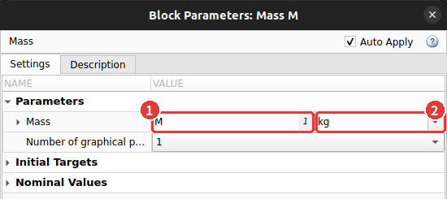
M을 적었다(작업공간의 값 1이 흐리게 보인다). 2 단위 — kg.스프링(k, N/m)과 댐퍼(b, N·s/m)도 같은 방법으로 적는다. 변환기에서는 경계를 넘을 때 붙이고 뗄 단위를 정한다.
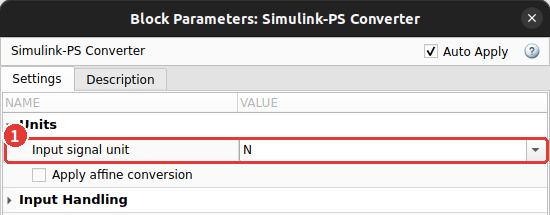
입력을 주는 Step 블록은 9회 ④처럼 Step time을 0으로 바꾸고, Final value에 F0를 적는다.
Step time을 기본값 1로 두면 응답이 1초 늦게 시작해서, ⑥에서 전달함수의 응답과 겹쳐 볼 때 1초만큼 어긋난다.
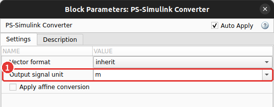
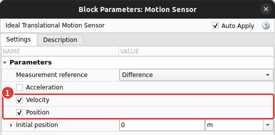
⚠️ 단위가 맞지 않으면 실행 전에 막힌다
Simulink-PS Converter를 m(길이)로 두고 Force Source(힘)에 이으면 「단위가 맞지 않는다」는 오류가 난다.
Simscape는 단위가 맞는지 실행 전에 검사한다. 반대로 N과 kN처럼 같은 종류끼리는 알아서 환산하므로,
변환기의 단위를 잘못 고르면 오류 없이 1000배 다른 답이 나올 수 있다. 결과의 크기가 이상하면 변환기의 단위부터 본다.
여기까지 만들었으면 Ctrl+S로 저장한다. 이름은 msd_simscape로 적는다 — 확장자 .slx는 저절로 붙는다.
9회처럼 MATLAB의 현재 폴더에 저장해야 ⑥에서 sim('msd_simscape')로 이 모델을 부를 수 있다.
⑥ 실행하고 전달함수와 비교하기
부품으로 만든 모델은 정말 ②의 식과 같은 답을 낼까? 작업공간에 M k b F0가 있는 상태에서, 9회 6-1처럼 Model Settings(Ctrl+E)의 Max step size를 0.01로 두고 Stop Time 6초로 Run을 누르고 Scope를 열면 출렁이며 0.1로 가는 곡선이 나온다.
그 결과를 코드로 꺼내 전달함수의 계단응답과 한 그래프에 겹친다.
% Simscape 모델을 돌리고, 같은 그림에 식(전달함수)으로 구한 응답을 겹친다
out = sim('msd_simscape');
x = out.simlog.Motion_Sensor.P.series; % 센서가 잰 위치 — 블록 이름의 빈칸은 _ 로
t_ssc = x.time; x_ssc = x.values('m');
[x_tf, t_tf] = step(F0*G, 6);
plot(t_ssc, x_ssc, 'LineWidth', 2.5); hold on
plot(t_tf, x_tf, 'k--', 'LineWidth', 1.2); hold off
grid on; legend('Simscape (부품을 이은 모델)', '전달함수 1/(Ms^2+bs+k)', 'Location', 'southeast')
xlabel('시간 (s)'); ylabel('x (m)'); title('같은 질량-스프링-댐퍼, 두 가지 방법')
fprintf('최대 위치 Simscape %.4f m, 전달함수 %.4f m\n', max(x_ssc), max(x_tf))
fprintf('최종 위치 Simscape %.4f m, 전달함수 %.4f m\n', x_ssc(end), x_tf(end))명령 창 출력
최대 위치 Simscape 0.1351 m, 전달함수 0.1350 m
최종 위치 Simscape 0.0999 m, 전달함수 0.0999 m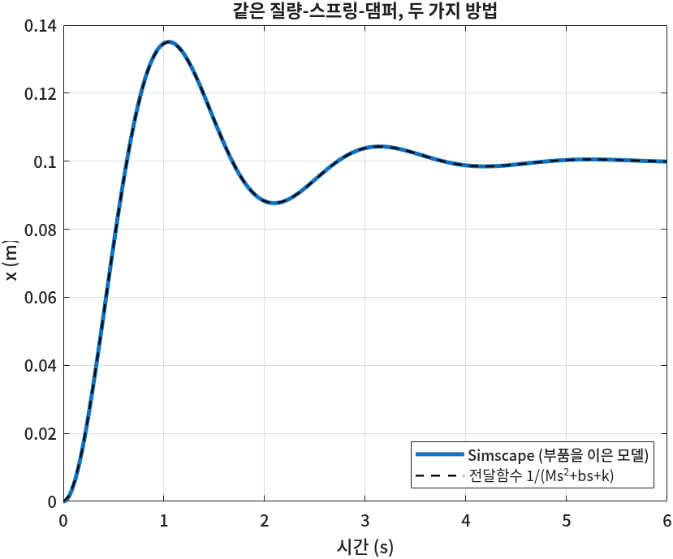
최대 위치 0.135 m, 최종 위치 0.1 m — ②의 📐에서 공식으로 구한 값과 같다. 식을 한 줄도 적지 않은 모델이 같은 답을 냈다.
🆕 이 코드에서 처음 나오는 것
- out.simlog.블록이름.변수.series
- Simscape 모델을 돌리면 모든 부품의 변수(힘 · 속도 · 위치 …)가
simlog에 기록된다. 블록 이름의 빈칸은_로 바뀐다(Motion Sensor→Motion_Sensor). 여기서는 센서의 위치P를 꺼냈다. - x.time · x.values('m')
- 기록된 값의 시간과 값.
values에 단위를 주면 그 단위로 바꿔서 돌려준다. 여기서는 m로 꺼냈다.'mm'를 주면 같은 값이 mm로 나온다.
⚠️ 「인식할 수 없는 메서드, 속성 또는 필드 'Motion_Sensor'」
모델의 블록 이름이 코드와 다를 때 나는 오류다. ④에서 이름을 바꾸지 않았으면 센서는 아직 Ideal Translational Motion Sensor라서
simlog에는 Ideal_Translational_Motion_Sensor로 들어 있다.
명령 창에 out.simlog만 치면 그 안에 든 블록 이름이 모두 나온다.
>> out.simlog
ans =
Node with properties:
id: 'msd_simscape'
savable: 1
exportable: 0
Spring_k: [1×1 simscape.logging.Node]
Motion_Sensor: [1×1 simscape.logging.Node]
Mass_M: [1×1 simscape.logging.Node]
Ground: [1×1 simscape.logging.Node]
Force_Source: [1×1 simscape.logging.Node]
Damper_b: [1×1 simscape.logging.Node]여기 나온 이름을 코드에 그대로 쓰거나, 모델에서 블록 이름을 코드에 맞게 고치고 저장한 뒤 다시 돌린다.
6-1 Simscape Results Explorer · simlog
센서를 달지 않은 부품의 값도 볼 수 있을까? simlog에는 모든 부품이 들어 있다. 툴스트립의 Simscape Results Explorer(SIMULATION 탭 오른쪽 끝)를 누르면 그 내용을 트리로 보여 준다.

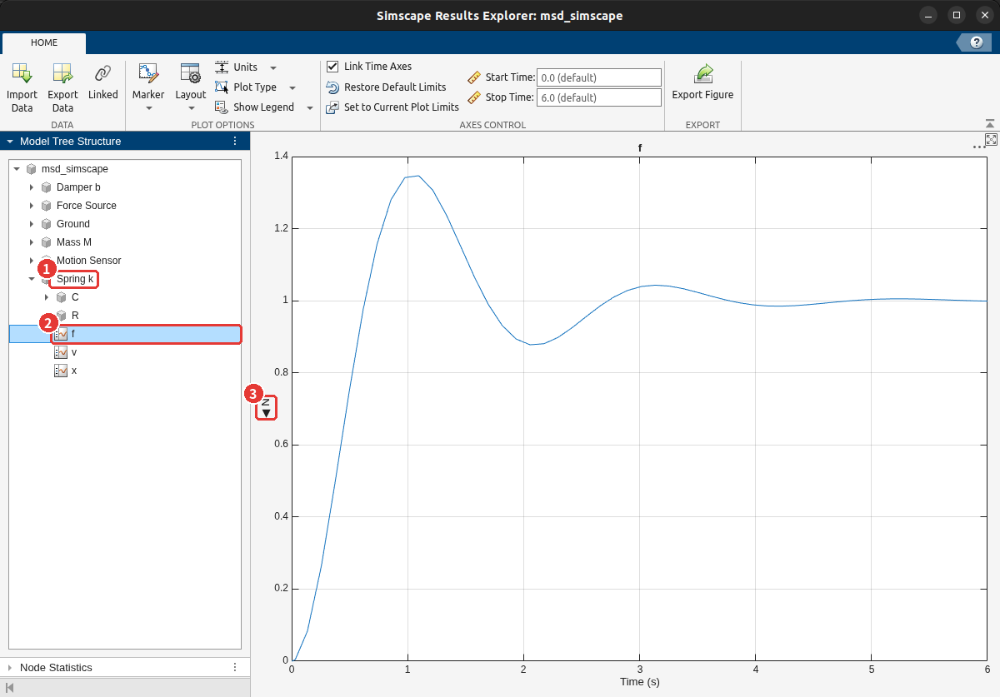
- 1모델 트리에서 부품(Spring k) 앞의 ▸를 눌러 펼친다. 화살표 대신 부품 이름을 누르면 그 부품의 변수(f · v · x)가 한꺼번에 칸을 나눠 그려진다.
- 2변수(f — 힘)를 누르면 오른쪽에 그래프가 뜬다. Ctrl을 누른 채 여러 개를 고르면 칸을 나눠 함께 그린다.
- 3세로축 단위 — 위쪽 Units 메뉴에서 바꿀 수 있다.
MATLAB을 한국어로 쓰고 있으면 메뉴가 우리말로 나온다 — Simscape Results Explorer는 「Simscape 결과 탐색기」, Model Tree Structure는 「모델 트리 구조」, Units는 「단위」다.
트리에 Ideal Translational Motion Sensor처럼 긴 이름이 보이면 ④에서 블록 이름을 바꾸지 않은 것이다. 코드로 꺼낼 때 이름이 달라지니 ④대로 바꿔 두는 편이 낫다.
스프링의 힘은 1 N으로 간다. 멈춘 뒤에는 스프링이 외력 1 N을 혼자 다 받아 낸다는 뜻이다. 코드로도 같은 값을 꺼낼 수 있다.
% Results Explorer 에서 본 값을 코드로 — 스프링이 받는 힘 f 와 댐퍼가 받는 힘
f_spring = out.simlog.Spring_k.f.series.values('N');
f_damper = out.simlog.Damper_b.f.series.values('N');
fprintf('t = 6 s 스프링 %.3f N, 댐퍼 %.3f N\n', f_spring(end), f_damper(end))
fprintf('k * x_final = %.3f N\n', k*x_final)명령 창 출력
t = 6 s 스프링 0.999 N, 댐퍼 -0.001 N
k * x_final = 1.000 N6초에서 스프링 0.999 N, 댐퍼는 거의 0이다. 댐퍼 힘은 속도에 비례하니 질량이 멈추면 사라진다. 힘의 균형 \(F = kx + b\dot x\)에서 \(\dot x = 0\)이면 \(F = kx\)다.
⑥절까지의 전체 코드
% 질량-스프링-댐퍼의 전달함수 X(s)/F(s) = 1/(M s^2 + b s + k)
M = 1; b = 2; k = 10; % 질량 [kg], 댐핑 [N*s/m], 스프링 [N/m]
F0 = 1; % 가하는 힘 [N]
s = tf('s');
G = 1/(M*s^2 + b*s + k)
damp(G)
x_final = F0*dcgain(G)
% Simscape 모델을 돌리고, 같은 그림에 식(전달함수)으로 구한 응답을 겹친다
out = sim('msd_simscape');
x = out.simlog.Motion_Sensor.P.series; % 센서가 잰 위치 — 블록 이름의 빈칸은 _ 로
t_ssc = x.time; x_ssc = x.values('m');
[x_tf, t_tf] = step(F0*G, 6);
plot(t_ssc, x_ssc, 'LineWidth', 2.5); hold on
plot(t_tf, x_tf, 'k--', 'LineWidth', 1.2); hold off
grid on; legend('Simscape (부품을 이은 모델)', '전달함수 1/(Ms^2+bs+k)', 'Location', 'southeast')
xlabel('시간 (s)'); ylabel('x (m)'); title('같은 질량-스프링-댐퍼, 두 가지 방법')
fprintf('최대 위치 Simscape %.4f m, 전달함수 %.4f m\n', max(x_ssc), max(x_tf))
fprintf('최종 위치 Simscape %.4f m, 전달함수 %.4f m\n', x_ssc(end), x_tf(end))
% Results Explorer 에서 본 값을 코드로 — 스프링이 받는 힘 f 와 댐퍼가 받는 힘
f_spring = out.simlog.Spring_k.f.series.values('N');
f_damper = out.simlog.Damper_b.f.series.values('N');
fprintf('t = 6 s 스프링 %.3f N, 댐퍼 %.3f N\n', f_spring(end), f_damper(end))
fprintf('k * x_final = %.3f N\n', k*x_final)⑦ 회전 운동 — 관성과 회전 댐퍼
직선 운동에서 한 일을 회전에서도 그대로 할 수 있을까? 4장의 회전 기계 소자표를 보면 질량 \(M\) → 관성 \(J\), 댐퍼 \(b\) → 회전 댐퍼 \(D\), 힘 \(F\) → 토크 \(T\), 위치 \(x\) → 각 \(\theta\)로 글자만 바뀐다. 11회의 모터는 축에 원판이 달린 회전 시스템이니 미리 한 번 만들어 둔다.
$$J\dot\omega + D\omega = T \quad\Rightarrow\quad \frac{\Omega(s)}{T(s)} = \frac{1}{Js + D}$$식에 나오는 부품을 그림으로 그리면 아래와 같다. 고정된 틀에 붙은 베어링 안을 축이 지나고, 축에 원판이 달려 있다. 축과 베어링 사이의 기름막이 속도에 비례하는 마찰 토크 \(D\omega\)를 낸다 — 이것이 회전 댐퍼다. 아래 모델과 같은 번호가 같은 부품이다.
모델은 처음부터 다시 만들지 않아도 된다. msd_simscape를 열어 SIMULATION 탭 › Save › Save As로 rot_simscape라는 이름으로 저장해 두고,
그 위에서 블록을 회전용으로 바꿔 끼운다. 아래 코드는 이 이름으로 모델을 부른다.

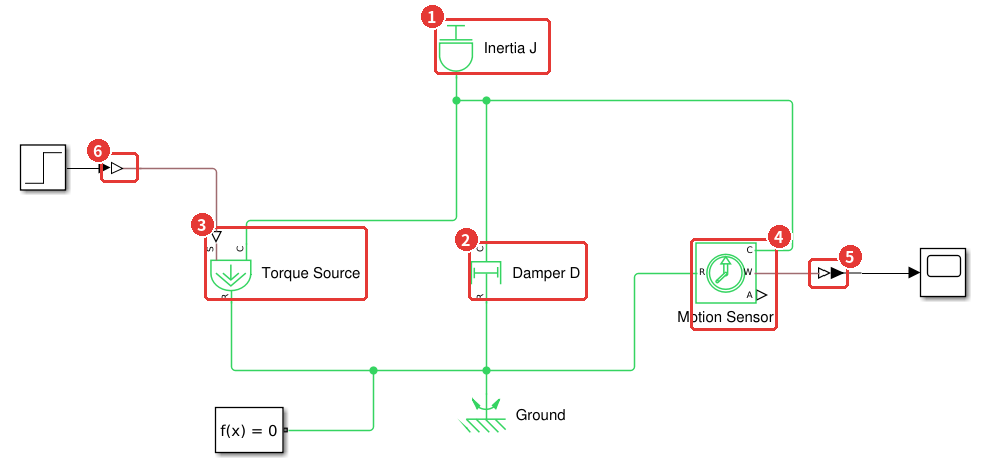
rot_simscape.slx — ④의 모델에서 블록을 회전용으로 바꿔 끼운 것이다. 스프링은 뺐다.- 1Inertia J (Mechanical › Rotational Elements) — 값 칸에
J(0.01), 단위 kg*m^2. - 2Damper D(Rotational Damper) — 값 칸에
D(0.02), 단위 N*m/(rad/s). - 3Torque Source(Ideal Torque Source, Mechanical Sources) — S 단자로 들어온 값만큼 토크를 낸다. ④의 Force Source처럼 블록에는 값을 적지 않는다.
0.1 N·m는 왼쪽 Step 블록에서 온다 — Step time 0, Final value
T0(작업공간의 0.1)로 두고, 6번 변환기가 거기에 N*m를 붙인다. - 4Motion Sensor(Ideal Rotational Motion Sensor) — W가 각속도, A가 각도다.
- 5PS-Simulink Converter — 출력 단위를 rpm으로 골랐다(아래 둘째 그림).
- 6Simulink-PS Converter — 들어오는 숫자에 N*m(토크 단위)을 붙인다(아래 첫째 그림). ⑤에서
N을 적은 자리다.
새로 놓은 블록에도 긴 이름이 붙으니 ④처럼 Inertia J · Damper D · Torque Source · Motion Sensor로 바꿔 둔다. 아래 코드는 out.simlog.Motion_Sensor로 센서 값을 꺼낸다.
블록이 J · D · T0를 작업공간에서 읽으니, Run 버튼으로 돌려 보려면 아래 코드의 둘째 줄을 먼저 실행해 둔다. Stop Time은 3초로 한다. Max step size 0.01은 msd_simscape에서 정해 둔 것이 Save As로 따라온다.
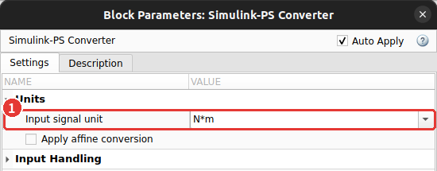
N을 두면 「단위가 맞지 않는다」는 오류가 난다. 목록에 없으면 칸에 N*m을 직접 친다.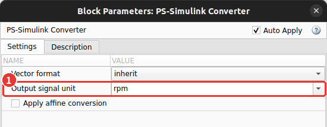
% 회전 관성 J 와 댐퍼 D 에 토크 T0 를 준다 — 식으로 구한 값과 Simscape 를 비교한다
J = 0.01; D = 0.02; T0 = 0.1; % [kg*m^2], [N*m/(rad/s)], [N*m]
w_final = T0/D % 최종 각속도 [rad/s]
rpm_final = w_final*60/(2*pi) % 같은 값을 rpm 으로
tau = J/D % 시정수 [s]
out = sim('rot_simscape');
w = out.simlog.Motion_Sensor.W.series;
plot(w.time, w.values('rpm'), 'LineWidth', 2); grid on
yline(rpm_final, 'k--', sprintf('%.1f rpm', rpm_final))
xline(tau, 'k:', '\tau = J/D')
xlabel('시간 (s)'); ylabel('회전속도 (rpm)'); title('토크 0.1 N·m 를 준 관성-댐퍼')
% 시정수 tau 에서 최종값의 몇 % 에 왔나
t = w.time; rpm = w.values('rpm');
[gap, i] = min(abs(t - tau)); % tau 에 가장 가까운 기록 시각의 번호
fprintf('t = %.2f s 에서 %.1f rpm — 최종값의 %.1f %%\n', t(i), rpm(i), 100*rpm(i)/rpm_final)
fprintf('이론값 1 - e^-1 = %.1f %%\n', 100*(1 - exp(-1)))명령 창 출력
w_final =
5
rpm_final =
47.7465
tau =
0.5000
t = 0.50 s 에서 30.3 rpm — 최종값의 63.4 %
이론값 1 - e^-1 = 63.2 %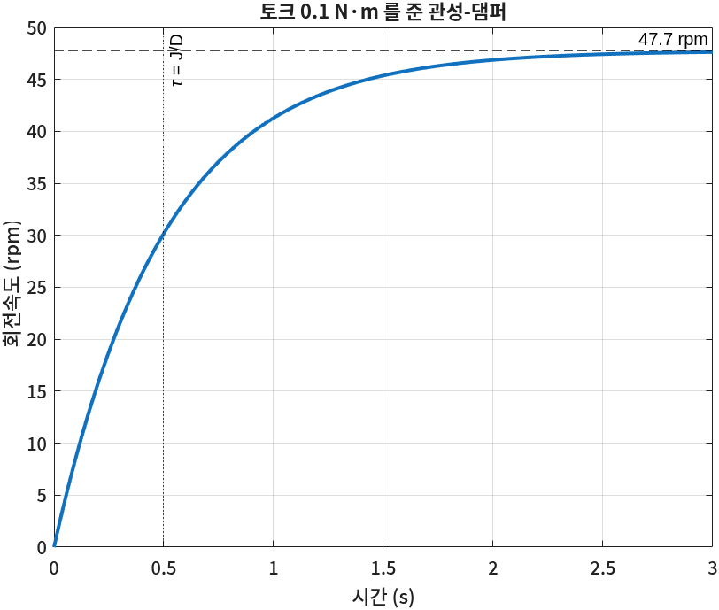
코드의 마지막 부분이 그 63%를 숫자로 확인한다. [gap, i] = min(abs(t - tau))는 기록된 시각 가운데 \(\tau\)와 차이가 가장 작은 것의 번호 i를 찾는다(3회의 [m, idx] = max(v)와 같은 꼴이다).
그 번호로 rpm(i)를 꺼내 최종값으로 나누면 0.5초에서 30.3 rpm, 63.4%가 나온다. 이론값 \(1 - e^{-1} = 63.2\%\)와 소수점 아래만 조금 다르다.
기록된 시각이 \(\tau\)와 꼭 맞아떨어지지는 않고 계산에도 작은 오차가 있어서다. fprintf 안의 %%는 글자 %를 찍으라는 뜻이다(% 하나는 %.1f 같은 자리 표시로 읽힌다).
📐 이론과 잇기 — 1차 지연 요소
\(\dfrac{\Omega(s)}{T(s)} = \dfrac{1}{Js + D} = \dfrac{1/D}{(J/D)s + 1}\) — 4장의 1차 지연 요소 \(\dfrac{K}{\tau s + 1}\)이다. \(K = 1/D = 50\), \(\tau = J/D = 0.5\) s.
$$\omega(\infty) = \frac{T_0}{D} = \frac{0.1}{0.02} = 5 \text{ rad/s} = 5 \times \frac{60}{2\pi} = 47.7 \text{ rpm}$$관성 \(J\)는 얼마나 빨리 도달하는지(시정수)를, 마찰 \(D\)는 어디까지 가는지(최종값)를 정한다. 11회에서 원판의 질량을 바꿀 때 이 둘을 다시 본다.
⑧ 전기 회로 — RC 회로
지금까지는 모두 기계였다. 같은 방법이 전기 회로에도 통할까? 블록만 전기용으로 바꾸면 된다. 11회의 모터는 전기 회로와 회전 기계가 한 모델에 들어가니, 여기서 전기 쪽을 한 번 만들어 둔다. 가장 간단한 회로로 저항 \(R\)과 커패시터 \(C\)를 직렬로 이은 RC 회로를 본다.
회로의 식부터 세운다. 전원 전압 \(v\)가 저항과 커패시터에 나뉘어 걸리고(KVL), 커패시터에 흐르는 전류는 전압이 변하는 빠르기에 비례한다.
$$v = R\,i + v_C, \qquad i = C\,\frac{dv_C}{dt}$$둘째 식을 첫째 식에 넣고 라플라스 변환하면(초기값 0)
$$RC\,\dot v_C + v_C = v \quad\Rightarrow\quad \frac{V_C(s)}{V(s)} = \frac{1}{RCs + 1}$$\(R = 1\) kΩ, \(C = 1\) mF를 넣으면 \(RC = 1000 \times 0.001 = 1\) s다. ⑦의 \(\dfrac{1}{Js+D}\)와 같은 1차 지연 요소다.
이번에는 기계 블록을 쓰지 않으니 ssc_new로 새 모델을 열고, 먼저 Ctrl+S로 rc_simscape라는 이름으로 현재 폴더에 저장한다. 그다음 아래 그림대로 블록을 놓고 잇는다.

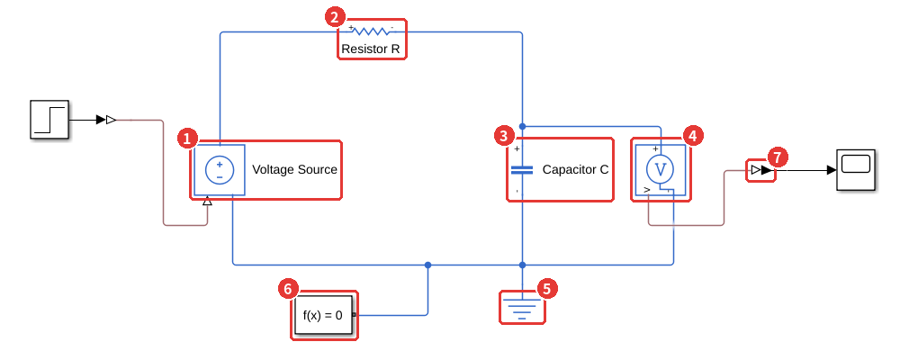
rc_simscape.slx — 파란 선이 전기 연결이다. 회로도를 그리듯 부품을 이으면 된다.- 1Voltage Source(Controlled Voltage Source, Electrical › Electrical Sources) — 아래 삼각형 단자로 들어온 물리 신호만큼 + · − 단자 사이에 전압을 낸다. ④의 Force Source처럼 블록에는 값을 적지 않는다.
5 V는 왼쪽 Step 블록에서 온다 — Step time 0, Final value
V0(작업공간의 5)로 두고, 8번 변환기가 거기에 V를 붙인다. - 2Resistor R(Electrical › Electrical Elements) — 값 칸에
R(1000), 단위 Ohm(아래 셋째 그림). 놓으면 이름이Resistor이니 Resistor R로 고친다 — 아래 코드가out.simlog.Resistor_R로 전류를 꺼낸다. - 3Capacitor C(Electrical › Electrical Elements) — 값 칸에
C(0.001), 단위 F. 처음 전압은 기본값 0 V 그대로 둔다. 이름은 그림에 맞춰 Capacitor C로 고친다. - 4Voltage Sensor(Electrical › Electrical Sensors) — +·− 단자를 커패시터 양 끝에 나란히 단다. 멀티미터로 전압을 잴 때 두 탐침을 대는 것과 같다. 아래 V 단자로 \(v_C\)가 나온다.
이름은 놓을 때부터
Voltage Sensor라 바꾸지 않아도 된다 — 코드는out.simlog.Voltage_Sensor로 꺼낸다. - 5Electrical Reference(Electrical › Electrical Elements) — 0 V 기준, 곧 접지다. 기계 모델의 Ground와 같은 자리다. 전압은 언제나 이곳을 기준으로 잰다.
- 6Solver Configuration — 회로 전체가 선 하나로 이어진 네트워크 하나이므로 하나만 붙인다.
- 7PS-Simulink Converter — 센서가 잰 전압을 V 단위의 숫자로 Scope에 보낸다(아래 둘째 그림).
- 8Simulink-PS Converter — Step의 숫자에 V를 붙여 전압으로 만든다(아래 첫째 그림). ④에서는
N, ⑦에서는N*m을 적은 자리다.
N이나 N*m으로 두면 단위가 맞지 않는다는 오류가 난다.mV를 고르면 같은 전압이 1000배 큰 숫자로 Scope에 나온다.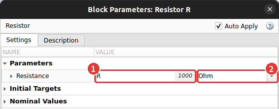
R(작업공간의 1000이 흐리게 보인다). 2 단위 — Ohm. Capacitor도 같은 꼴로 C와 F를 적는다.
블록이 R · C · V0를 작업공간에서 읽으니, Run 버튼으로 돌려 보려면 아래 코드의 둘째 줄을 먼저 실행해 둔다. Stop Time은 5초로 하고, 새로 연 모델이니 Model Settings의 Max step size도 다시 0.01로 둔다.
기계 모델과 나란히 놓으면 블록이 하나씩 짝을 이룬다. ①에서 본 「접점에서 힘의 합은 0」이 전기에서는 「접점에서 전류의 합은 0」(키르히호프 전류 법칙)이 된다.
| 기계 (④ · ⑦) | 전기 (⑧) | |
|---|---|---|
| 접점을 지나가는 양 | 힘 · 토크 | 전류 |
| 두 단자의 차이로 재는 양 | 속도 · 각속도 | 전압 |
| 기준 | Mechanical Reference (바닥) | Electrical Reference (접지) |
| 입력 | Ideal Force · Torque Source | Controlled Voltage Source |
| 센서 | Motion Sensor | Voltage Sensor |
모델을 돌리고 ⑥처럼 전달함수의 응답과 겹쳐 본다. 저항에는 센서를 달지 않았으니 전류는 6-1처럼 simlog에서 꺼낸다.
% RC 회로에 전압 V0 를 준다 — 전달함수로 구한 응답과 Simscape 를 비교한다
R = 1e3; C = 1e-3; V0 = 5; % [Ohm], [F], [V]
tau = R*C % 시정수 [s]
Grc = tf(1, [R*C 1]) % Vc(s)/V(s) = 1/(RCs + 1)
out = sim('rc_simscape');
vc = out.simlog.Voltage_Sensor.V.series;
[v_tf, t_tf] = step(V0*Grc, 5);
plot(vc.time, vc.values('V'), 'LineWidth', 2.5); hold on
plot(t_tf, v_tf, 'k--', 'LineWidth', 1.2); hold off
grid on; legend('Simscape (부품을 이은 회로)', '전달함수 1/(RCs+1)', 'Location', 'southeast')
xline(tau, 'k:', '\tau = RC', 'HandleVisibility', 'off')
xlabel('시간 (s)'); ylabel('v_C (V)'); title('5 V 를 준 RC 회로의 커패시터 전압')
i_R = out.simlog.Resistor_R.i.series.values('mA'); % 센서 없이 저항 전류를 꺼낸다
fprintf('저항 전류 t = 0 s: %.2f mA, t = 5 s: %.3f mA\n', i_R(1), i_R(end))
% 시정수 tau 에서 최종값의 몇 % 에 왔나
t = vc.time; v = vc.values('V');
[gap, i] = min(abs(t - tau));
fprintf('t = %.2f s 에서 %.2f V — 최종값의 %.1f %%\n', t(i), v(i), 100*v(i)/V0)명령 창 출력
tau =
1
Grc =
1
-----
s + 1
Continuous-time transfer function.
Model Properties
저항 전류 t = 0 s: 5.00 mA, t = 5 s: 0.034 mA
t = 1.00 s 에서 3.15 V — 최종값의 63.1 %
tau가 1 s, Grc가 \(\dfrac{1}{s+1}\)로 위에서 손으로 구한 값 그대로다.
「저항 전류」 줄은 전류가 처음 5 mA에서 5초 뒤 0.034 mA로 거의 0까지 줄었다는 뜻이다.
마지막 줄은 ⑦과 같은 방법으로 \(t = \tau = 1\) s의 전압을 찾은 것이다 — 3.15 V, 최종값 5 V의 63.1%다.
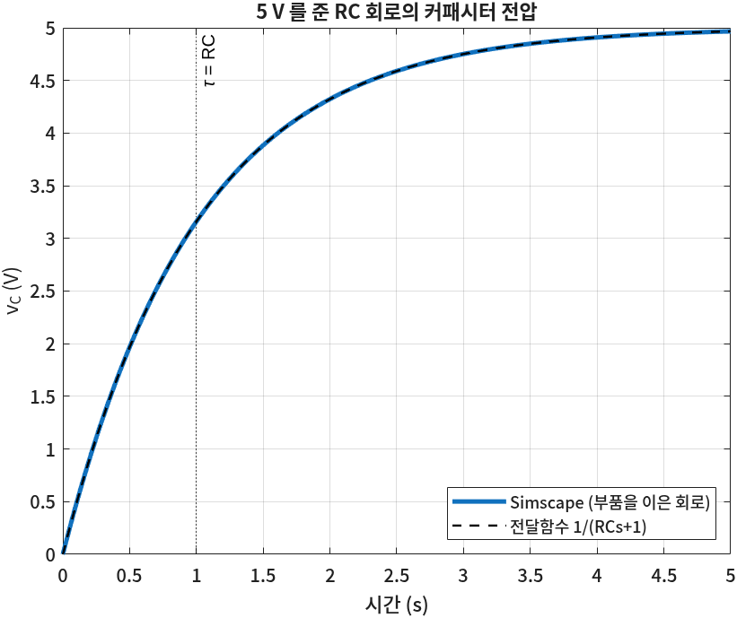
📐 이론과 잇기 — RC 회로의 계단응답
\(\dfrac{1}{RCs+1}\)에 크기 \(V_0\)인 계단을 넣으면
$$v_C(t) = V_0\left(1 - e^{-t/RC}\right), \qquad i(t) = C\,\frac{dv_C}{dt} = \frac{V_0}{R}\,e^{-t/RC}$$숫자를 넣으면
$$v_C(1) = 5\,(1 - e^{-1}) = 5 \times 0.632 = 3.16 \text{ V}$$ $$i(0) = \frac{5}{1000} = 5 \text{ mA}, \qquad i(5) = 5\,e^{-5} = 0.034 \text{ mA}$$출력의 두 전류 값과 같다. 처음 순간 커패시터는 비어 있어(\(v_C = 0\)) 전원 전압이 모두 저항에 걸리고, 커패시터가 차오를수록 저항에 걸리는 전압이 줄어 전류도 줄어든다. ⑦의 \(\tau = J/D\)가 여기서는 \(\tau = RC\)다 — 분야가 달라도 1차 지연 요소는 같은 모양이다.
🆕 이 절에서 처음 나오는 것
- Controlled Voltage Source
- 물리 신호로 받은 값만큼 +·− 단자 사이에 전압을 거는 전원. 여기서는 Step이 주는 5 V를 회로에 건다. 11회에서 모터에 거는 전압도 이 블록이다.
- Resistor · Capacitor
- 저항 \(R\)과 커패시터 \(C\). 단자 두 개를 회로에 잇는다. 여기서는 1 kΩ과 1 mF로 시정수 1 s를 만든다.
- Voltage Sensor
- +·− 단자 사이의 전압을 재서 V 단자(물리 신호)로 내보낸다. 재려는 부품과 나란히 단다. 여기서는 커패시터 전압 \(v_C\)를 잰다.
- Electrical Reference
- 전기 회로의 0 V 기준(접지). 전기 네트워크마다 적어도 하나 있어야 전압을 정할 수 있다.
⑧절까지의 전체 코드
% 질량-스프링-댐퍼의 전달함수 X(s)/F(s) = 1/(M s^2 + b s + k)
M = 1; b = 2; k = 10; % 질량 [kg], 댐핑 [N*s/m], 스프링 [N/m]
F0 = 1; % 가하는 힘 [N]
s = tf('s');
G = 1/(M*s^2 + b*s + k)
damp(G)
x_final = F0*dcgain(G)
% Simscape 모델을 돌리고, 같은 그림에 식(전달함수)으로 구한 응답을 겹친다
out = sim('msd_simscape');
x = out.simlog.Motion_Sensor.P.series; % 센서가 잰 위치 — 블록 이름의 빈칸은 _ 로
t_ssc = x.time; x_ssc = x.values('m');
[x_tf, t_tf] = step(F0*G, 6);
plot(t_ssc, x_ssc, 'LineWidth', 2.5); hold on
plot(t_tf, x_tf, 'k--', 'LineWidth', 1.2); hold off
grid on; legend('Simscape (부품을 이은 모델)', '전달함수 1/(Ms^2+bs+k)', 'Location', 'southeast')
xlabel('시간 (s)'); ylabel('x (m)'); title('같은 질량-스프링-댐퍼, 두 가지 방법')
fprintf('최대 위치 Simscape %.4f m, 전달함수 %.4f m\n', max(x_ssc), max(x_tf))
fprintf('최종 위치 Simscape %.4f m, 전달함수 %.4f m\n', x_ssc(end), x_tf(end))
% Results Explorer 에서 본 값을 코드로 — 스프링이 받는 힘 f 와 댐퍼가 받는 힘
f_spring = out.simlog.Spring_k.f.series.values('N');
f_damper = out.simlog.Damper_b.f.series.values('N');
fprintf('t = 6 s 스프링 %.3f N, 댐퍼 %.3f N\n', f_spring(end), f_damper(end))
fprintf('k * x_final = %.3f N\n', k*x_final)
% 회전 관성 J 와 댐퍼 D 에 토크 T0 를 준다 — 식으로 구한 값과 Simscape 를 비교한다
J = 0.01; D = 0.02; T0 = 0.1; % [kg*m^2], [N*m/(rad/s)], [N*m]
w_final = T0/D % 최종 각속도 [rad/s]
rpm_final = w_final*60/(2*pi) % 같은 값을 rpm 으로
tau = J/D % 시정수 [s]
out = sim('rot_simscape');
w = out.simlog.Motion_Sensor.W.series;
plot(w.time, w.values('rpm'), 'LineWidth', 2); grid on
yline(rpm_final, 'k--', sprintf('%.1f rpm', rpm_final))
xline(tau, 'k:', '\tau = J/D')
xlabel('시간 (s)'); ylabel('회전속도 (rpm)'); title('토크 0.1 N·m 를 준 관성-댐퍼')
% 시정수 tau 에서 최종값의 몇 % 에 왔나
t = w.time; rpm = w.values('rpm');
[gap, i] = min(abs(t - tau)); % tau 에 가장 가까운 기록 시각의 번호
fprintf('t = %.2f s 에서 %.1f rpm — 최종값의 %.1f %%\n', t(i), rpm(i), 100*rpm(i)/rpm_final)
fprintf('이론값 1 - e^-1 = %.1f %%\n', 100*(1 - exp(-1)))
% RC 회로에 전압 V0 를 준다 — 전달함수로 구한 응답과 Simscape 를 비교한다
R = 1e3; C = 1e-3; V0 = 5; % [Ohm], [F], [V]
tau = R*C % 시정수 [s]
Grc = tf(1, [R*C 1]) % Vc(s)/V(s) = 1/(RCs + 1)
out = sim('rc_simscape');
vc = out.simlog.Voltage_Sensor.V.series;
[v_tf, t_tf] = step(V0*Grc, 5);
plot(vc.time, vc.values('V'), 'LineWidth', 2.5); hold on
plot(t_tf, v_tf, 'k--', 'LineWidth', 1.2); hold off
grid on; legend('Simscape (부품을 이은 회로)', '전달함수 1/(RCs+1)', 'Location', 'southeast')
xline(tau, 'k:', '\tau = RC', 'HandleVisibility', 'off')
xlabel('시간 (s)'); ylabel('v_C (V)'); title('5 V 를 준 RC 회로의 커패시터 전압')
i_R = out.simlog.Resistor_R.i.series.values('mA'); % 센서 없이 저항 전류를 꺼낸다
fprintf('저항 전류 t = 0 s: %.2f mA, t = 5 s: %.3f mA\n', i_R(1), i_R(end))
% 시정수 tau 에서 최종값의 몇 % 에 왔나
t = vc.time; v = vc.values('V');
[gap, i] = min(abs(t - tau));
fprintf('t = %.2f s 에서 %.2f V — 최종값의 %.1f %%\n', t(i), v(i), 100*v(i)/V0)🧪 실습
RLC 직렬 회로를 Simscape로 만들고 질량-스프링-댐퍼와 비교한다
이걸 해 보면 무엇을 알게 되나: ⑧의 RC 회로에 인덕터 하나를 더하면 ②의 질량-스프링-댐퍼와 같은 꼴의 2차 시스템이 된다는 것 — \(L\)이 질량, \(R\)이 댐퍼, \(1/C\)가 스프링 자리에 들어간다는 것을 손으로 확인한다.
준비물: MATLAB(Simulink · Simscape). 전기 블록은 모두 Foundation Library › Electrical 아래에 있다.
ssc_new로 새 모델을 연다. (1분)- ⑧처럼 Step(5) → Simulink-PS Converter(단위 V) → Controlled Voltage Source를 놓는다. (3분)
- Resistor(2 Ω) · Inductor(1 H, Electrical Elements) · Capacitor(0.1 F)를 전원과 직렬로 잇고, 전원의 −와 커패시터의 아래쪽 끝을 Electrical Reference에 붙인다. (10분)
- Voltage Sensor를 커패시터 양 끝에 나란히 달고, V 단자를 PS-Simulink Converter(단위 V) → Scope로 보낸다. (5분)
- Solver Configuration을 회로 아무 곳에나 붙이고, Model Settings에서 Max step size 0.01, Stop Time 6초로 돌린다. (3분)
- 명령 창에서
G = tf(1, [0.1 0.2 1])로 \(\dfrac{V_C(s)}{V(s)} = \dfrac{1}{LCs^2 + RCs + 1}\)을 만들고step(5*G, 6)을 Scope와 비교한다.damp(G)도 본다. (5분)
이렇게 되면 성공이다: 커패시터 전압이 5 V를 넘어 약 1.06초에 6.75 V까지 올랐다가 출렁이며 5 V로 가라앉고, Scope와 step의 곡선이 겹친다.
damp(G)의 극점 \(-1 \pm 3j\), 제동비 0.316, 고유주파수 3.16 rad/s가 ②의 질량-스프링-댐퍼와 같다.
📝 연습문제
- ④의 모델에서 댐퍼 \(b\)를 0.5, 2, 6.32 N·s/m로 바꿔 돌려라. 6.32에서는 출렁임이 거의 사라진다. 그 이유를 제동비 \(\zeta = b/(2\sqrt{kM})\)로 설명하라.
- ④의 모델에서 PS-Simulink Converter의 단위를
mm로 바꾸면 Scope의 숫자는 어떻게 되나? 코드의x.values('m')는 바뀌나? 각각 예상하고 확인하라. - ⑦의 모델에서 \(J\)를 두 배로 하면 최종 속도와 시정수가 각각 어떻게 바뀌어야 하나? \(D\)를 두 배로 하면? 식으로 예상하고 돌려서 확인하라.
- ⑧의 회로에서 \(R\)을 2 kΩ으로 바꾸면 시정수와 처음 순간의 저항 전류는 각각 얼마가 되어야 하나? 식으로 예상하고
simlog로 확인하라.
한 장 요약
왼쪽은 오늘 쓴 블록과 함수, 오른쪽은 그것이 모델링의 어느 자리인지다.
| 블록 · 함수 | 하는 일 | 모델링에서 쓰는 자리 |
|---|---|---|
ssc_new | Simscape용 빈 모델을 기본 블록과 함께 연다 | 시작 |
| Mass · Translational Spring · Translational Damper | 질량 \(M\) · 스프링 \(k\) · 댐퍼 \(b\) | 기계 소자 (4장) |
| Mechanical Translational Reference | 움직이지 않는 바닥(벽) | 기준점 |
| Ideal Force Source | 입력 신호만큼의 힘을 낸다 | 입력 \(F(t)\) |
| Ideal Translational Motion Sensor | 위치 · 속도를 잰다 | 출력 \(x(t)\) |
| Simulink-PS Converter · PS-Simulink Converter | Simulink 신호 ↔ 물리 신호, 단위를 붙이고 뗀다 | 두 세계의 경계 |
| Solver Configuration | 물리 네트워크의 계산 설정 | 모든 Simscape 모델에 하나 |
out.simlog · Simscape Results Explorer | 모든 부품의 힘 · 속도 · 위치 기록 | 모델 속 들여다보기 |
| Inertia · Rotational Damper · Ideal Torque Source · Ideal Rotational Motion Sensor | 회전 관성 \(J\) · 회전 댐퍼 \(D\) · 토크 입력 · 각속도 측정 | 회전 기계 (11회 모터) |
| Controlled Voltage Source · Resistor · Capacitor · Voltage Sensor · Electrical Reference | 전압 입력 · 저항 \(R\) · 커패시터 \(C\) · 전압 측정 · 접지 | 전기 회로 (11회 모터) |
✅ 점검
조금 더 알아두면
- Simscape Multibody. 오늘의 블록은 「한 방향으로만 움직이는」 1차원 부품이다. 로봇 팔처럼 3차원으로 움직이는 물체는 Simscape Multibody(별도 제품)로 만들고, 실행하면 Multibody Explorer 창에 3D로 움직이는 모습이 나온다. 11회에서 모터에 단 원판을 이것으로 바꿔 도는 모습을 본다.
- Simscape Electrical. DC 모터 · 배터리 · 인버터처럼 자주 쓰는 전기 부품을 완성된 블록으로 제공한다(별도 제품). 11회에서는 Foundation Library만으로 모터를 직접 조립한다 — 블록 하나하나가 식의 어느 항인지 보이기 때문이다.
- Through 변수와 Across 변수. Simscape는 연결선마다 두 종류의 양을 다룬다. 접점을 지나가는 양(힘 · 토크 · 전류)과 접점 사이의 차이로 재는 양(속도 · 각속도 · 전압). 접점에서 지나가는 양의 합은 0, 붙어 있는 단자의 차이 양은 같다. ①의 「나뉜 힘의 합은 0」이 이 규칙이다.
- 센서 없이 결과 보기. 모델이 커지면 센서를 일일이 달기 번거롭다. Results Explorer나
simlog로 필요한 값만 찾아보면 된다. 기록 범위는 Model Settings › Simscape에서 정한다.